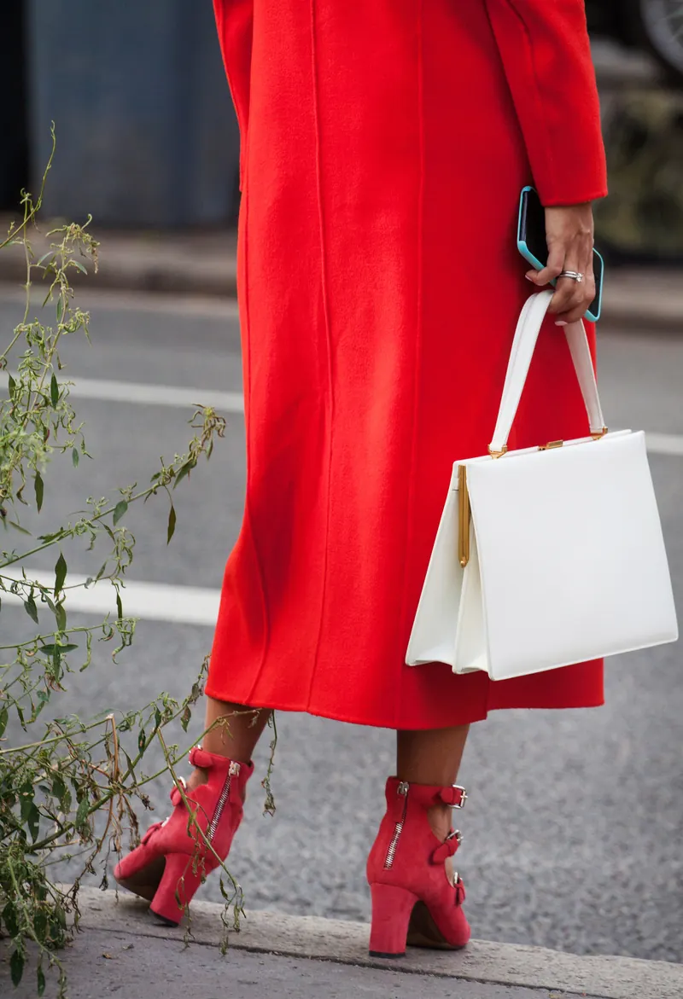

Garde-robe capsule : la méthode pour ne plus avoir « rien à se mettre »
Une penderie pleine et pourtant l’impression de n’avoir « rien à se mettre » : la situation est courante. La garde-robe capsule y répond simplement, avec moins de pièces, mieux choisies et faciles à associer. Voici ma méthode en six étapes pour construire une garde-robe fonctionnelle, à partir de ce que vous possédez déjà.
Qu’est-ce qu’une garde-robe capsule ?
Une garde-robe capsule est un ensemble resserré de vêtements et d’accessoires qui s’associent facilement entre eux. Chaque pièce y a sa place, parce qu’elle vous va, qu’elle correspond à votre vie et qu’elle fonctionne avec le reste.
On cite souvent une trentaine de pièces par saison. Ce chiffre est un repère, pas une règle : la bonne taille de capsule dépend de votre rythme, de votre métier, du climat et de votre envie de variété. Une capsule n’est pas non plus forcément beige et minimaliste. Elle peut être colorée, graphique ou romantique, du moment qu’elle reste cohérente.
Ses bénéfices sont très concrets : des choix plus rapides le matin, des achats plus réfléchis, moins de dépenses inutiles et des tenues adaptées à votre mode de vie.
Étape 1 : faire l’inventaire de ce que vous avez
Tout commence par un état des lieux honnête. Sortez vos vêtements, catégorie par catégorie, et répartissez-les en quatre piles :
- J’adore et je porte : ce sont vos piliers, ils révèlent votre style réel.
- J’aime mais je ne porte pas : cherchez pourquoi (coupe, couleur, confort, manque d’associations).
- Je garde par obligation : un cadeau, le prix payé, le « au cas où ».
- Ne me correspond plus : à donner, à vendre ou à recycler.
La deuxième pile est la plus instructive. Elle montre souvent ce qui manque pour que des pièces existantes redeviennent portables : un bas neutre, une veste, la bonne paire de chaussures.

Étape 2 : cartographier votre mode de vie
Une garde-robe fonctionnelle reflète la façon dont vous vivez vraiment, pas celle que vous imaginez. Prenez une semaine type et estimez la part de votre temps consacrée à chaque contexte :
- travail au bureau, télétravail, rendez-vous clients ;
- temps en famille, sorties, week-ends ;
- sport, déplacements, voyages.
Comparez ensuite avec votre penderie. Si vous passez la moitié de la semaine en télétravail mais que vos placards débordent de tenues de soirée, ce décalage explique une bonne partie du « rien à me mettre ». À Genève, pensez aussi aux transitions : les matinées fraîches, les trajets à pied ou à vélo et les changements de saison marqués demandent des pièces qui se superposent bien.
Étape 3 : choisir une palette de base
La palette est le ciment de la capsule. Quand vos couleurs s’harmonisent, presque tout s’associe avec presque tout.
- Deux ou trois neutres pour les pièces de base : marine, camel, gris, chocolat, crème ou noir, selon ce qui vous va.
- Deux ou trois couleurs principales qui vous ressemblent et illuminent votre visage.
- Une ou deux couleurs d’accent, à doser en accessoires ou en pièces fortes.
Pour choisir ces teintes avec justesse, la colorimétrie est un outil précieux. Je l’explique en détail dans mon article trouver les couleurs qui vous mettent en valeur, et une analyse de colorimétrie personnelle vous donne une palette à consulter au quotidien.
Conseil en image & style
Un accompagnement personnalisé pour construire une image en accord avec votre personnalité, votre mode de vie et vos objectifs. 2 à 3 heures · dès CHF 320.–.
Étape 4 : équilibrer basiques, pièces fortes et associations
Les basiques
Ce sont les pièces qui structurent vos tenues : un pantalon bien coupé, une chemise, un pull fin, une veste, un manteau. Choisissez-les dans vos neutres, dans des coupes qui respectent vos proportions et dans des matières qui vieillissent bien. Mon article sur les coupes, silhouettes et proportions vous aide à faire ces choix.
Les pièces fortes
Ce sont elles qui donnent du caractère : une couleur vive, un imprimé, une matière remarquable, un accessoire signature. Une capsule sans pièces fortes devient vite monotone. Gardez-en quelques-unes, choisies parce qu’elles vous ressemblent et non parce qu’elles sont tendance.
Tester les associations
Une pièce mérite sa place si elle s’associe à au moins trois autres. Essayez vos combinaisons, prenez-les en photo et gardez-les sur votre téléphone. Ce petit catalogue personnel devient votre réserve d’idées les matins pressés. C’est exactement le principe d’un lookbook digital, qui rassemble vos associations de tenues dans un document clair.
Étape 5 : acheter de façon réfléchie
Une fois l’inventaire fait, vos achats deviennent ciblés. Tenez une courte liste de vos manques réels et ne faites vos achats qu’à partir d’elle.
Un outil simple aide à décider : le coût par port. Divisez le prix d’une pièce par le nombre de fois où vous pensez la porter. Un manteau à CHF 300.– porté cent fois revient à CHF 3.– par port. Un top à CHF 40.– porté deux fois revient à CHF 20.– par port. Le moins cher n’est donc pas toujours le plus économique.
Regardez aussi les matières et les finitions : une couture solide, un tissu qui ne bouloche pas et une coupe que vous pourrez retoucher prolongent la vie d’une pièce. La seconde main et la retouche sont d’excellentes alliées pour compléter une capsule sans multiplier les achats neufs. Enfin, laissez passer quelques jours avant un achat impulsif : si la pièce vous manque encore, c’est souvent bon signe.
Quelques questions à vous poser avant de passer en caisse :
- Est-ce dans ma palette ?
- Cette coupe me met-elle vraiment en valeur ?
- Est-ce adapté à ma semaine type ?
- Avec quelles pièces de ma capsule vais-je l’associer ?
Étape 6 : faire évoluer votre capsule au fil des saisons
Une capsule vit. À chaque changement de saison, rangez les pièces hors saison, faites un mini-inventaire et ajustez votre liste de manques. C’est aussi le moment de vérifier si votre mode de vie a changé : nouveau poste, nouveau rythme, nouvelles envies.
Avec le temps, vous achetez moins, mais mieux, et votre style devient plus lisible. L’impression de n’avoir « rien à vous mettre » laisse place à une garde-robe qui travaille pour vous.
Si vous souhaitez un regard extérieur pour poser ces bases, le conseil en image & style réunit analyse de colorimétrie, conseils sur les coupes et suggestions de vêtements adaptés à votre style, avec un guide personnalisé pour la suite.
Questions fréquentes
Combien de pièces compte une garde-robe capsule ?
Il n’existe pas de nombre idéal. On cite souvent une trentaine de pièces par saison, mais le bon chiffre dépend de votre mode de vie, du climat et de votre envie de variété.
Faut-il tout racheter pour créer une garde-robe capsule ?
Non. Une capsule se construit d’abord à partir de ce que vous possédez déjà. Les achats viennent ensuite, pour combler des manques précis.
Une garde-robe capsule est-elle forcément neutre et minimaliste ?
Pas du tout. Une capsule peut être colorée et pleine de caractère : l’essentiel est que les pièces s’associent facilement entre elles et vous ressemblent.